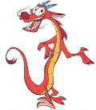
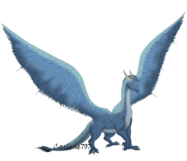

Bienvenida a tu pequeño museo
Hola Susu, te dejo este pequeño detalle, espero que te guste.
Consiste en una "sala de arte" que agrupa nuestros mejores momentos.
Así como tus cosas favoritas.
Curado especialmente para ti️.
Hola Susu, te dejo este pequeño detalle, espero que te guste.
Consiste en una "sala de arte" que agrupa nuestros mejores momentos.
Así como tus cosas favoritas.
Curado especialmente para ti️.
Cada momento contigo es una obra de arte que no cualquier artista podría recrear.
Nuestra Costco date.
Técnica: Técnicas mixtas.
Susu y yo comiendo brownie con una vista hermosa.
Técnica: Acrílico.
Museo raro, pero la comida, 10/10.
Técnica: Pintura al pastel.
Una de las fotos más bonitas que podemos tener.
Técnica: Óleo.
El inicio de esta bonita historia.
Técnica: Acuarela.
Esta sección es una apreciación a tu teoría y a tu personalidad, tan hermosa como tú.
🔥 El corazón de fuego.
Hace alusión a esa capacidad tan intensa de amar a las personas que son importantes para ti. Así como esa nobleza que tienes para cuidar de los demás.
⚔️ El corazón noble.
Saphira me recuerda a esa valentía que tienes, de siempre intentar cosas nuevas. Así como esa resiliencia que tienes para afrontar todos los retos que te pone la vida.
🌙️ El corazón hermoso.

Finalmente, este dragon simboliza tu elegancia, tu sutileza y tu misterio. Así como esa belleza que tienes, tanto por dentro como por fuera.
Todas esas metas que quiero cumplir contigo.
Pasta nights y cenas elegantes a tu lado.
Morning cuddles, amanecer a tu lado cada día de mi vida.
Esa pareja que cumple todas sus metas juntos, fit y saludables.
Cumplir todos esos viajes que tenemos pendientes.
Ser una power couple y darnos el estilo de vida que nos merecemos.
Ver mil series y películas a tu lado.
Esta sección hace alusión a esa inteligencia, y esa responsabilidad con la que
llevas tu residencia. No cualquiera es capaz de hacer lo que tú haces nena, y por eso mismo,
te admiro demasiado.
Esta sección engloba tus mayores gustos, tratando de hacer una sala divertida: Café y Series policiacas.

El amor huele a café
Se presenta el siguiente caso:
El detective Kevin ha sido llamado para resolver un misterio mientras toma un chocolate en la
cafetería más popular de la condesa.
Castigo: Tendrá que visitar la última sección y tomar una decisión.
Después de tantos altibajos, hay algo que quiero preguntarte...
¿Serías mi novia? Otra vez...
My partner in pasta, en series de televisión, en fines de semana abrazados.
Mi persona favorita, mi Susu, mi todo.
Esto apenas está comenzando.